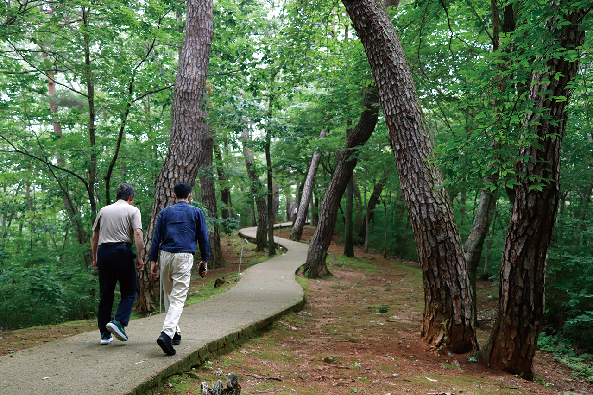
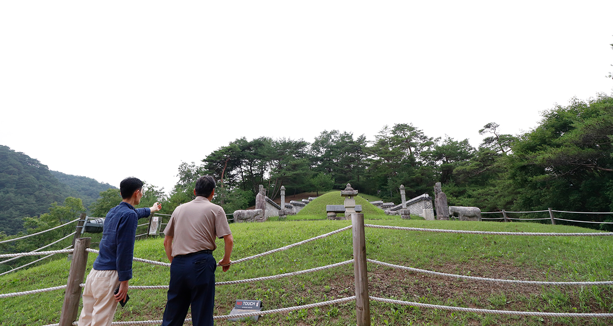
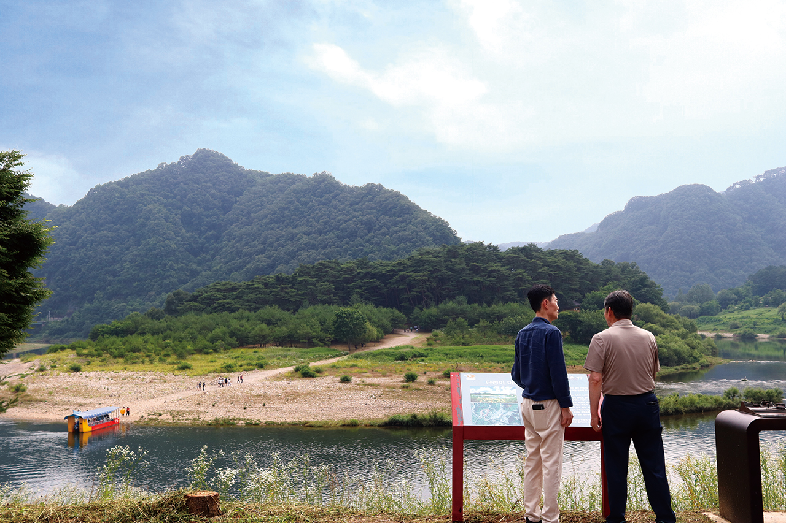
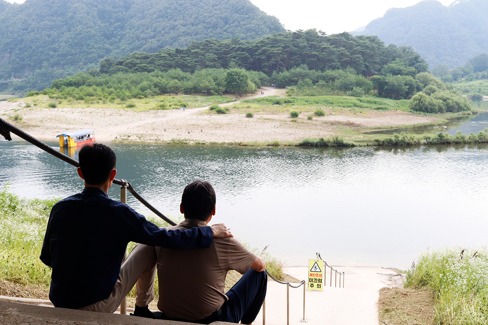

글. 김성민
사진.김성민
열여섯의 나이에 생을 마감한 어린 왕은 무엇을 꿈꾸었을까.
서강이
삼면을 둘러싼 청령포에서, 배반과 고독 속에서도 품위를 잃지 않았다는
단종.
그는 절망에 빠지지도, 헛된 희망에 기대지도 않았다고 전해진다.
강원랜드 마음채움센터를 통해 인연을 맺은 이들과 함께 그 발자취를
따라간다.
도박이라는 자신만의 청령포에서 빠져나온 사람들. 그 고립의 의미를
알고,
그곳에서 빠져나온 이들만이 느낄 수 있는 공감의 여정이다.
초여름 영월의 푸른 산하가 전하는 메시지를 찾아 나선다.

청령포에 도착한 일행은 삼면을 둘러싼 깊은 물줄기 앞에서 잠시 침묵했다.
소나무 숲에서 불어오는 바람에는 송진 향이 배어 있었다. 2016년
가족캠프에서 만난 이들은 10년 세월을 이어 인연을 지켜왔다. 같은 처지의
사람들끼리 느끼는 동질감, 중독에서 빠져나와 함께 살아간다는 사실
자체가 큰 위안이었다.
경훈 씨(가명)는 나루터 계단을 내려가지 못하고 머뭇거렸다. 도박에 한참
몰입했을 때가 꼭 이런 느낌이었다. 건축 현장 관리자로 정년퇴직한 후의
공허함을 도박으로 달랬다. 거래처 접대로 처음 간 카지노에서 거둔 큰 돈,
경비며 식비까지 충당하고도 남을 만큼의 행운이 오히려 화근이었다.
초심자의 행운, 도박 중독의 시작점에는 늘 이 달콤한 덫이 있다. 결국
모든 것을 잃고 찜질방비조차 낼 수 없어 쫓겨났을 때, 그는 이미 몸과
마음의 건강을 잃은 상태였다. 경훈 씨가 갇힌 이 청령포를 두고
‘헤엄쳐서라도 나가면 되지 않느냐’고 생각할 수 있겠지만, 중독의 늪은
그리 만만하지 않았다. 갇혀 있으면 나가고 싶고 나오면 또 들어가고
싶어진다는 경훈 씨의 말에 우리는 쓴웃음을 지었다.

죽음 후에야 강을 건널 수 있었던 단종은 야트막한 언덕에 묻혔다. 이곳
장릉으로 가는 길, 복잡한 역사를 알고 산길을 오르는 이의 심상이
무색하도록 초여름의 영월 산들은 짙푸르게 우거져 있었다.
장릉은 다른 왕릉들에 비해 초라했다. 옛날 대갓집 무덤보다도 작아
보인다는 평가가 나왔다. 하지만 영월 호장 엄흥도가 목숨을 걸고 어린
왕의 시신을 수습했고, 절의를 지킨 충신과 궁녀들의 위패가 함께 모셔져
있다는 사실이 묵직한 위로를 전했다.
경훈 씨는 영월에서 열리는 토크 콘서트나 모래 예술 공연 때 도박 예방
캠페인을 나갔던 기억을 떠올렸다. 모래로 단종의 이야기를 표현하는
공연에 사람들이 눈물을 흘렸다고. 비극 속에서도 누군가는 끝까지 믿는
바를 지켰고, 오늘날 우리가 이곳에서 단종을 기억할 수 있는 것이다.
함께 온 임효성 상담사도 비슷한 과거를 가지고 있었다. 한때 서울에서
잘나가는 대기업 직장인이던 그는 25년간 도박에 빠져 일상을 잃어갔다.
경제적 어려움을 몰랐던 그가 처음 도박을 접한 건 1990년대 초
경마장에서였다. 카드를 32개나 발급받아 돌려막기를 하던 시절의 기억이
아직도 생생하다고 했다.
“청령포를 보며 그 시절 도박이라는 벽으로 스스로 감옥에 들어가 살던
시절이 떠오릅니다.” 청년 시절부터 경마장 ‘단골’이었고, 주말에도 문을
여는 강원랜드에 발길이 닿고 말았다. 늘어난 빚은 아파트를 처분해도 갚을
수 없었고, 가정마저 무너졌다. 2009년부터는 강원랜드 주변에서 앵벌이로
살았다. 카지노 입장객들의 예약 자리를 되파는 일로 겨우 끼니를 때웠다.
3일을 굶고 누군가 사준 제육볶음을 먹다가 탈이 났던 경험이 그를
밑바닥까지 끌어내렸다.

경훈 씨는 전 세계 카지노 중 유일하게 도박중독 예방·치유 프로그램을
운영하는 마음채움센터의 도움으로 9개월간 병원 치료를 받았다. 치료비와
간식비까지 지원받으며 연금을 모아 퇴원 때는 월세 보증금을 마련할 수
있었다.
가장 도움이 된 것은 동료상담사 프로그램이었다. 단도박 경험자가 현재의
도박중독자를 상담하는 이 프로그램을 통해 새로운 삶의 이유를 찾았다.
상담하면서 그들이 자신과 다르지 않다는 것을 깨달았고, ‘다시는 도박하지
않겠다’는 각오가 확고해졌다.
임 상담사는 2014년 센터 소개로 하이원 베이커리에서 3년 넘게 일하며
제빵 기술을 익혔다. 다른 일에 몰두하니 도박 생각이 자연스럽게
줄어들었다. 그 무렵 어머니께 모든 것을 고백했고, ‘지금 괜찮으면
괜찮다’는 한마디에 하염없이 눈물을 흘렸다.
이후 자격증을 취득하고 2018년 강원랜드에 입사했다. 그를 보고 함께
도박하던 10여 명이 스스로 영구출입정지를 신청했다. 현재 하루 30~40명을
상담하는 그는, 25년을 도박해도 다시 살 수 있다는 것을 몸소 보여준다.
영월 시내로 돌아오는 길, 일행은 회복이란 ‘현재진행형’이어야 한다고 다짐했다. 도박은 끊는 것이 아니라 평생 참는 것이라는 임 상담사의 말이 무겁게 다가왔다. 경훈 씨는 일상을 지키는 지혜를 전했다. 혼자 있는 시간을 줄이고, 힘들 때는 무조건 나가서 걷는다고 했다.

단종이 끝내 건너지 못했던 그 강을 이들은 건넜다. 도박이라는 각자의
청령포에 갇혔던 고통을 이겨내고, 결국 용기를 내어 삶을 도강했다.
혼자서는 불가능했을 일이 함께라서 가능했다.
깊은 절망 속에서도 누군가는 손을 내밀고, 그 손을 잡는 용기가 있다면
새로운 삶이 시작될 수 있다. 단종이 보여준 담담함처럼, 있는 그대로의
삶을 받아들이며 하루하루를 살아가는 것. 그것이 영월이 전하는 지혜였다.